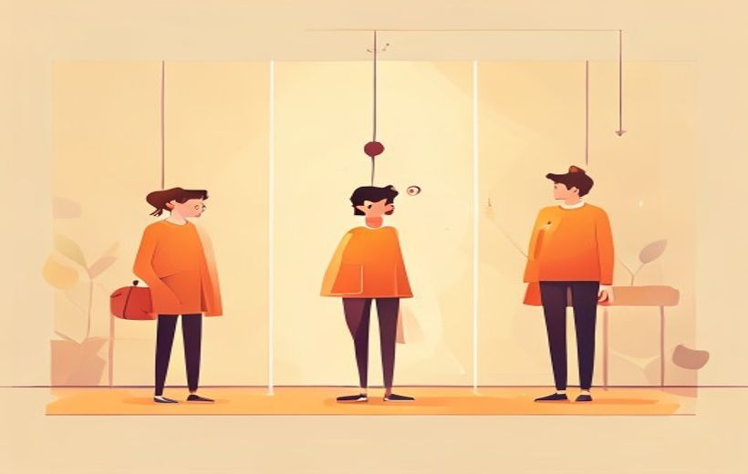
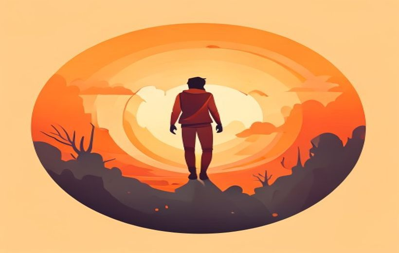

Estructura narrativa clásica de 3 actos, Aristóteles → Field → McKee, el viaje del héroe de Campbell/Vogler, los giros narrativos y cómo se construye una historia que engancha.
Todo relato tiene principio, medio y final.
Un relato audiovisual no es "contar por contar": es elegir qué mostrar, en qué orden y cómo para que el espectador sienta exactamente lo que tú quieres que sienta — con imagen, sonido, ritmo y montaje trabajando juntos.
🧠 Los conceptos
Despliega cada tarjeta, léela con calma y márcala como entendida. La barra de arriba irá subiendo.
Un relato audiovisual es una historia que se cuenta con imagen + sonido. No basta con "poner imágenes": cada encuadre, cada corte, cada música tiene que aportar significado y empujar el mismo mensaje.
Las preguntas clave del creador son: ¿Qué experiencia construye el relato en el espectador? ¿Qué quiero que sienta en cada momento?
En publicidad, marketing y comunicación digital, vivimos en un entorno saturado de estímulos: el espectador abandona en cuanto baja el interés. Por eso, coherencia y capacidad de generar expectación son decisivas: cómo introduces el conflicto, cómo dosificas la información, cómo preparas los giros.
La estructura narrativa es el esqueleto de la historia: la forma en que se organiza todo lo que pasa. Se llama "diseño invisible" porque el espectador no la ve, pero la siente: le mantiene conectado emocional y atencialmente.
Elegir la estructura no es arbitrario: responde a la intención creativa, al tipo de historia y a los valores que la marca quiere transmitir. Existen varios tipos:
| Estructura | Cómo funciona | Efecto en el espectador |
|---|---|---|
| Clásica 3 actos | Inicio → nudo → desenlace, lineal | Comprensión fácil + identificación emocional |
| No lineal | Altera el orden temporal (empieza por el final, flashbacks…) | Intriga e incertidumbre; reconstrucción mental |
| Coral | Varios personajes cuyas historias se entrelazan | Múltiples perspectivas + empatía distribuida |
| Espiral | Retoma escenas con variaciones: acumulación simbólica | Resonancia, "eco" y crecimiento por repetición |
| Episódica | Cada episodio tiene un conflicto propio + arco mayor | Continuidad emocional + fidelización |
| Hiperbreve | Muy corta, decodificación rápida | Impacto inmediato (ideal para digital) |
Aristóteles fue el primero en decir que una historia necesita principio, medio y final — hace más de 2.300 años. Syd Field lo convirtió en un diagrama visual (Screenplay, 1979) y Robert McKee lo profundizó con el concepto de arco dramático y valor en cada escena.
La proporción clásica en cine:

La estructura en 3 actos: planteamiento, nudo y desenlace.
| Acto | Proporción | ¿Qué pasa? | Término de Field |
|---|---|---|---|
| 1 · Planteamiento | ~25 % | Presenta el mundo, los personajes y el conflicto inicial. Marca tono, estilo y expectativas. Si tarda en mostrar tensión, el espectador desconecta. | Termina con el plot point 1: el héroe acepta la misión / punto de no retorno. |
| 2 · Nudo / Confrontación | ~50 % | Profundiza en el conflicto: obstáculos, dificultad creciente, giros, revelaciones. Es la parte más compleja y donde más cuesta mantener la atención. | Midpoint (~50 %): giro mayor, cambio de objetivo. Termina con plot point 2: momento más oscuro, "todo está perdido". |
| 3 · Desenlace | ~25 % | Clímax y resolución del conflicto. El protagonista resuelve (o no) la historia, transformado. Siempre debe haber cierre emocional aunque el final sea abierto. | Clímax (confrontación última) → resolución (nuevo equilibrio). |
Joseph Campbell (1949, El héroe de las mil caras) estudió mitos de todas las culturas y descubrió que todos siguen el mismo patrón: el monomito. Christopher Vogler lo adaptó al cine en 12 etapas (The Writer's Journey, 1992).
El patrón es tan universal que lo encuentras en Star Wars, Harry Potter, El Rey León, Matrix, El Señor de los Anillos… prácticamente cualquier blockbuster. También en spots publicitarios de Nike y Apple.

El viaje del héroe según Vogler.
| # | Etapa | Qué ocurre |
|---|---|---|
| 1 | Mundo ordinario | La vida cotidiana del héroe antes del cambio. |
| 2 | Llamada de la aventura | Aparece el reto o la misión. |
| 3 | Rechazo de la llamada | El héroe duda; miedo al cambio. |
| 4 | Encuentro con el mentor | Una figura le da ayuda, sabiduría o herramienta. |
| 5 | Cruce del primer umbral | Entra de verdad al mundo nuevo / la aventura comienza. |
| 6 | Pruebas, aliados, enemigos | Aprende las reglas del nuevo mundo. |
| 7 | Aproximación a la caverna profunda | Se prepara para el reto mayor. |
| 8 | La gran prueba (ordeal) | Enfrentamiento clave: "muere y renace" simbólicamente. |
| 9 | Recompensa | Obtiene el elixir, el objeto o el conocimiento buscado. |
| 10 | El camino de vuelta | Regresa con nuevas dificultades. |
| 11 | Resurrección | Última prueba definitiva: demuestra que ha cambiado. |
| 12 | Regreso con el elixir | Vuelve transformado y comparte lo aprendido. |
Sin conflicto no hay historia. Un conflicto dramático es una situación donde alguien tiene un objetivo, algo se lo impide y las consecuencias de no conseguirlo importan. Las tres patas son obligatorias.
Además, los relatos potentes suelen mezclar conflicto externo (tensión con algo de fuera: otro personaje, la naturaleza, la sociedad, la tecnología) y conflicto interno (la lucha dentro del personaje: lo que quiere vs. lo que necesita).
| Tipo de conflicto | Ejemplo audiovisual |
|---|---|
| Hombre vs. Hombre | Antagonista personificado. Casablanca, Rocky. |
| Hombre vs. Naturaleza | Lucha por sobrevivir. Lo imposible, Vida de Pi. |
| Hombre vs. Sociedad | El sistema oprime. 1984, Joker, V de Vendetta. |
| Hombre vs. Sí mismo | Conflicto interno. Black Swan, A Beautiful Mind. |
| Hombre vs. Destino / Tecnología | Fuerzas superiores. 2001, Matrix, Edipo. |
El arco dramático (o arco emocional) es la transformación que vive un personaje a lo largo de la historia. Un personaje con arco responde de forma diferente al final ante situaciones similares a las del principio.
Sin arco, el personaje entra igual que sale: es un figurante, no un protagonista. El arco es lo que hace que una historia tenga sentido emocional y no solo acción.
Un giro narrativo es un cambio en la historia que te hace reinterpretar lo que ya has visto y cambia tu expectativa de lo que viene. Bien usado, activa la toma de decisiones del espectador (en publicidad: el clic, la compra).
Para que un giro funcione tiene que estar sembrado sin delatarse: pistas sutiles visuales, sonoras, repetición de un motivo… El espectador no lo vio venir, pero al llegar piensa "claro, cómo no lo vi antes".
| Tipo de giro | ¿Qué cambia? |
|---|---|
| Giro de información | Aparece un dato nuevo que reconfigura todo lo anterior. |
| Giro de perspectiva | Cambia quién o qué era "el centro" de la historia. |
| Giro de objetivo | Se revela que el propósito real era otro distinto al aparente. |
| Giro tonal | Pasa de humor a emoción (o viceversa) sin romper la coherencia. |
El final no es solo "la última parte": es el momento en que las piezas encajan, la tensión se resuelve o se transforma. No necesita acción espectacular: un final sutil puede ser más poderoso si está alineado con el tono de toda la historia.
Lo que sí es obligatorio: cierre emocional. El espectador debe sentir que algo ha concluido, aunque el argumento quede abierto.
Antes de rodar, el equipo creativo necesita documentos que definan el universo visual y narrativo del proyecto. Los dos más importantes:
Moodboard (tablero de inspiración): colección de imágenes, colores, texturas, fotogramas de referencia y tipografías que definen el tono visual del proyecto. Es el "qué aspecto tiene esto en mi cabeza" puesto en papel.
Biblia de personajes: documento que describe en profundidad cada personaje: aspecto físico, personalidad, motivaciones, historia personal, forma de hablar, relaciones con los demás. Garantiza que todo el equipo trabaje el mismo personaje.
| Herramienta | ¿Qué define? | ¿Para quién? |
|---|---|---|
| Moodboard | Tono visual, paleta de color, estética | Todo el equipo: dirección, fotografía, vestuario… |
| Biblia de personajes | Quién es cada personaje, qué quiere, cómo es | Guionistas, directores, actores |
🃏 Flashcards
Toca cada tarjeta para girarla. Tapa la definición con la mano y comprueba si te la sabes.
✅ Test rápido
6 preguntas tipo examen. Elige una opción y te corrige al momento con la explicación.
⭐ Preguntas del final de la presentación
La presentación del Tema 2 no incluye una diapositiva de "Autoevaluación" con preguntas literales. Las siguientes son 3 preguntas de práctica elaboradas a partir del contenido del examen — ideales para repasar lo que el profesor marca como más importante. (preguntas de práctica)